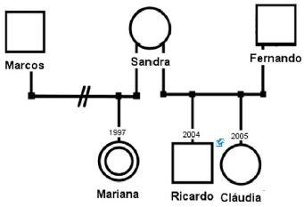

Questão 11 · Incidência e Prevalência · Incidência acumulada x Densidade de Incidência · Medicina Preventiva · 4000142351Analise as seguintes medidas de frequência de doença em uma população: I - 25 casos de gripe por 1.000 pessoas-ano. II - 3.460.413 casos de covid-19 no Brasil de 26/02 a 18/08/2020. III - 1.633 casos de covid-19 por 100.000 habitantes no Brasil de 26/02/2020 a 18/08/2020. As medidas de frequência epidemiológica resultantes do cálculo de I, II e III representam, respectivamente:
A Densidade de incidência, número absoluto de casos no período, taxa de incidência acumulada.
B Incidência acumulada, prevalência pontual, coeficiente de incidência do período.
C Taxa de incidência, coeficiente de prevalência, razão de incidência no período.
D Coeficiente médio de incidência, proporção relativa de incidência, taxa de prevalência acumulada.
Questão 12 · Medicina Preventiva · Especif icidade · 4000142350O teste treponêmico FTA-ABS (anticorpo treponêmico uorescente com absorção) é um teste confirmatório para sí lis e que não deve ser solicitado para o diagnóstico inicial da doença. Considerando os conceitos de validade dos testes de diagnóstico, essa recomendação é baseada em qual atributo do teste?
A Baixo valor preditivo negativo
B Baixo valor preditivo positivo
C Alta proporção de resultados falsos positivos
D Alta especificidade
Questão 13 · Estudos de f ase III · Medicina Preventiva · 4000142349Os ensaios clínicos de fase III para testar a e cácia e a segurança de novas vacinas devem seguir preceitos rígidos de qualidade, para que seus resultados sejam con áveis e para que não haja favorecimento ao desempenho do produto em teste. Para tal, é necessário que dois grupos de indivíduos sem a doença sejam formados e que se assemelhem em características demográ cas e clínicas. Que recurso se utiliza para garantir essa semelhança entre os grupos de comparação?
A Utilizar técnicas de mascaramento (cegamento) do pesquisador.
B Evitar a utilização de grupo placebo.
C Alocar aleatoriamente os pacientes nos grupos.
D Utilizar técnicas para mascaramento (cegamento) do paciente.
Revisar: possível letra faltando em enunciado
Questão 14 · Modos de Transmissão das Doenças Transmissíveis · 4000142348Qual inseto é vetor de uma helmintose prevalente na região Nordeste do Brasil?
A Lutzomyia whitmani
B Culex quinquefasciatus
C Amblyomma cajennense
D Sabethes chloropterus
Questão 15 · Declaração de óbito DO Atestado de óbito · 4000142347Sobre o preenchimento do documento de declaração de óbito (DO), considere as seguintes afirmativas: I - A DO deve ser preenchida em caso de óbito pré-natal do concepto, independentemente da idade gestacional. II - A causa básica do óbito deve ser descrita como última condição no encadeamento que explica os eventos que levaram à morte. III - Em óbito por causa violenta, o médico que dá o primeiro atendimento deve, por lei, preencher a DO. IV - A falência de múltiplos órgãos é a causa direta mais frequente de óbito, devendo encabeçar a lista de eventos. Qual o número de afirmativas corretas?
A Três
B Dois
C Um
D Quatro
Questão 16 · Medicina Preventiva · 4000142346Lista Nacional de Notif icação Compulsória de doenças agravos e eventos de saúde pública A Portaria nº 264 do Ministério da Saúde de 17/02/2020, que trata da lista de doenças e agravos de noti cação compulsória no Brasil, tem, como principal atualização, a inclusão dos seguintes agravos:
A Suicídio, violência doméstica, violência à mulher e covid-19.
B Covid-19, toxoplasmose congênita, histoplasmose e criptococose.
C Paracoccidioidomicose, violência à mulher, covid-19 e esporotricose humana.
D Doença de Chagas crônica, criptococose, esporotricose humana e paracoccidioidomicose.
Questão 17 · Redução Relativa do Risco RRR ou Ef icácia · Medidas de Associação e Medidas de Impacto · 4000142345A ação analgésica de dois medicamentos (A e B) foi comparada pelo tempo de resolução da dor após a ingestão de um comprimido, administrado por via oral a 100 pacientes semelhantes. A média (desvio-padrão) do tempo do medicamento A foi de 100 (10) minutos e a do medicamento B foi de 50 (5) minutos. Considerando o coeficiente de variação do tempo para resolução da dor como a medida de comparação desses dois medicamentos, é correto concluir:
A O medicamento A tem efeito analgésico mais regular do que B.
B Os medicamentos A e B têm distribuição de tempo de eficácia analgésica semelhante.
C O medicamento B tem efeito analgésico mais regular do que A.
D A e B têm efeito analgésico semelhante, porém A tem coeficiente de variação maior que B.
Questão 18 · Medicina Preventiva · Princípios e Diretrizes do SUS na Lei n 80801990 · 4000142344Dona Júlia tem 57 anos e está com muita dor nas costas, há mais de um mês. Ela é obesa, dona de casa e sustenta a sua vida lavando roupas para terceiros. Ela resolveu procurar a Unidade de Pronto Atendimento (UPA) no último sábado, porque teve muita dor no nal da sexta-feira passada. Chegou à UPA às 6 horas da manhã, pegou a senha de atendimento e logo em seguida foi atendida pela enfermeira, que lhe colocou uma pulseira azul. Após 45 minutos de espera, Dona Júlia cou irritada ao perceber que várias pessoas que chegaram após ela já haviam sido atendidas pelo médico. Reclamou com a administração da UPA, porém lhe explicaram que a ordem dos atendimentos estava correta. Esclareceram que todos que foram atendidos em sua frente estavam com pulseiras vermelhas, laranjas ou amarelas, da classificação de risco. Qual princípio doutrinário do Sistema Único de Saúde brasileiro é exemplificado com a situação do atendimento da Dona Júlia?
A Universalidade de acesso
B Integralidade
C Equidade
D Hierarquia de serviços
Questão 19 · Medicina Preventiva · Razão de Mortalidade Materna · 4000142343O denominador utilizado para o cálculo do indicador de mortalidade materna é:
A Total de nascidos vivos.
B Total de gestantes.
C Total de mulheres em idade fértil.
D Total de nascidos vivos + natimortos.
Questão 20 · Genograma · Medicina Preventiva · 4000142342Analise a figura. Qual informação pode ser extraída do genograma de abordagem familiar da estratégia saúde da família ilustrado na figura?

A Sandra é casada com Fernando, é irmã de Marcos e Mariana é sua sobrinha.
B Fernando é o novo companheiro de Sandra, com quem teve três filhos.
C Marcos foi casado com Sandra, porém não teve filhos com ela.
D Mariana é filha de Marcos com Sandra, que estão separados.
Questão 21 · Higiene oral · Pediatria · 4000142341Menina, 10 meses, é levada à consulta de rotina de Puericultura. Mãe está preocupada porque até agora não tem nenhum dente. Mama no peito até hoje. Relata que no outro lho com 6 meses de idade nasceu dente. O médico disse que os dentes de leite são temporários, mas muito importantes e são substituídos pelos dentes permanentes. Analise as seguintes informações/orientações sobre a dentição: I - Cada criança tem seu próprio tempo para o surgimento dos dentes, apesar de ser um processo natural e hereditário. II - Os dentes incisivos centrais superiores geralmente são os primeiros a aparecerem e, ainda, estão em tempo de erupção, esperar até os 12 meses. III - Os dentes incisivos centrais inferiores geralmente são os segundos dentes a aparecerem, esperar até os 15 meses. IV - Depois da erupção dos primeiros dentes de leite, a higiene oral da criança deve ser realizada como a primeira tarefa da manhã e a última tarefa da noite, e se possível, depois das refeições. Quais informações/orientações estão corretas?
A II e IV, apenas.
B I, II, III e IV.
C I e IV, apenas.
D II e III, apenas.
Questão 22 · Como devem ser as mamadas ao longo do dia · 4000142340Prevenção e manejo dos principais problemas relacionados à amamentação Menino, de 15 dias de vida, foi levado a UESF para consulta de puericultura pela mãe e a avó paterna. Mãe relata que seu leite é fraco, que não sustenta o lho, ele chora muito, acha que tem muitas cólicas. Há uma semana vem oferecendo água (que ele não aceita), chás de erva-doce e de camomila sem açúcar. Há 5 dias a avó comprou leite em pó e está complementando à noite com uma mamadeira de leite + 1 colher de chá de Maizena e ofereceu chupeta, ele passou a dormir melhor. AF: mãe 18 anos, G1P1AO, solteira, não fez pré-natal, parto cesariana. PN: 3.100g, C= 49 cm, PC: 34 cm, Apgar 8 e 9. Vacinas BCG e Hepatite B. Peso atual: 3.180g. Exame físico sem alteração. Após, o médico pediu para colocar a criança para sugar e observou que a mãe faz uso de protetores (intermediários) de mamilos, diz que é para diminuir a dor e evitar o trauma dos mamilos. Porém, chorou de dor quando o lho começou a sugar. Pediu permissão para examinar as mamas da mãe: estavam túrgidas, distendidas, os mamilos pouco protusos com ssuras perimamilares bilateralmente, à expressão manual saída de leite uido. O médico percebeu que o risco de desmame precoce é alto e a sua prevenção é muito importante. Analise as orientações seguintes: I - Retirada da mamadeira e da chupeta. II- Amamentação com técnica adequada (posicionamento e pega adequados). III - Manter o uso de protetores (intermediários) de mamilos para diminuir a dor e evitar o trauma mamilar. IV - Amamentação em livre demanda – a criança é colocada no peito assim que dá os primeiros sinais de que quer mamar. V - A higiene dos mamilos antes da amamentação com produtos como sabões e álcool gel protege o mamilo e evita infecção. Quais orientações são adequadas a m de permitir a continuidade da amamentação e evitar o desmame precoce da criança?
A I, II e III, apenas.
B III, IV e V, apenas.
C I, II e IV, apenas.
D I, II, III, IV e V.
Questão 23 · Pediatria · Diagnóstico · Gráf icos OMS Classif icação nutricional · 4000142339Menina, 7 anos de idade, foi levada para consulta em Unidade Básica de Saúde pela mãe. Apresenta queixa de ganho de peso excessivo nos últimos meses. Exame físico: Peso = 35 kg; Altura = 1,25 m (IMC = 22,4 Kg/m²). Colocado na curva (OMS) de IMC/Idade, identificado escore Z +2 e Z +3. Qual é o diagnóstico correto?
A Obesidade grave
B Obesidade
C Sobrepeso
D Risco de sobrepeso
Questão 24 · Fimose · Pediatria · 4000142338Menino, 2 anos e 6 meses de idade, é levado à unidade de saúde com quadro de di culdade para urinar, forma uma “bola de urina” e depois sai o jato. Ao exame da genitália, os testículos estão normais, o pênis é bem formado, o prepúcio apresenta retração discreta, mas não há exposição da glande e nem do meato uretral. Qual a classificação do grau da fimose do paciente?
A 5
B 2
C 3
D 4
Questão 25 · Leishmaniose visceral LV · 4000142337Pré-escolar, 4 anos de idade, sexo feminino, natural e procedente de Várzea Grande-MT, residente na área rural, deu entrada na UPA com quadro de febre de 39°C, intermitente e irregular com 2 ou 3 picos por dia há 3 semanas, astenia, perda de peso. Ao exame: Sinais Vitais: Fr: 28 irpm, Fc: 130 bpm, Tax: 39,3ºC. REG, prostrada, palidez cutaneomucosa, hidratada. A ausculta cardíaca e pulmonar eram normais. Abdome globoso, ruídos hidroaéreos positivos, à palpação, fígado a 3 cm RCD e baço a 5 cm do RCE, sem sinal de irritação peritoneal. Linfonodos não palpáveis. Demais sem alteração. Hemograma: Hemácias: 3,6 milhões, Hb: 9,0 g/dL, Ht: 27%; Leucócitos: 3.900 mm³; Plaquetas 60.000 mm³; Ureia: 17 mg/dL; Creatinina: 0,6 mg/dL; VHS: 55mm; Bilirrubina total: 0,3 mg/dL; Bilirrubina indireta: 0,2 mg/dL; Bilirrubina direta: 0,1 mg/dL; Amilase: 153 mg/dL; AST:27 U/mL; ALT: 15 U/mL; Proteínas totais: 5,15; Albumina: 3,0 mg/dL; Globulina: 2,15mg/dL. Qual é a principal hipótese diagnóstica?
A Leishmaniose visceral
B Linfoma de Hodgkin
C Malária por P. falciparum
D Esquistossomose
Questão 26 · Gastrologia Pediátrica · Pediatria · 4000142336Menina, 4 anos de idade, é levada à unidade de saúde com quadro de dor abdominal de início há 1 ano, do tipo em pontadas, localizada na porção inferior do abdômen, acompanhada de distensão abdominal e mal-estar geral, com a frequência média desses episódios de duas a três vezes por semana. Refere como fator de melhora para a dor e distensão a partir da evacuação e pela eliminação de ato. Desde o início da dor, também apresentou irregularidade intestinal com predomínio de diarreia, chegando a 5 evacuações por dia, fezes totalmente líquidas, sem sangue ou restos alimentares. Eventualmente apresenta períodos de constipação intestinal, com evacuações de 4 em 4 dias, com fezes de aspecto de bolinhas endurecidas e fragmentadas. Segundo a escala de Bristol de consistência das fezes, as fezes totalmente líquidas e as fezes endurecidas e fragmentadas relatadas no caso são classificadas, respectivamente, em que tipo?
A 3 e 6
B 2 e 5
C 7 e 1
D 4 e 2
Questão 27 · Imunodef iciências primárias · Pediatria · 4000142335Lactente, 1 ano e 6 meses idade, foi encaminhado para consulta com pediatra no Hospital Universitário com história de ganho de peso inadequado. Nos últimos 12 meses, apresentou 6 episódios de diarreia prolongada que melhoraram somente com uso de medicação antiparasitária, 4 episódios de otites e 1 episódio de pneumonia, sendo que se agravou e precisou ser internado na UTI com quadro de sepses, recebendo antibióticos endovenosos. Parto normal. Peso 3.200 g; C= 48 cm, Apgar 8/9. Aleitamento materno exclusivo até 6 meses de vida. Vacinas em dia. Exame físico: Peso = 8.350 g; Altura = 81 cm [IMC = 13,1 Kg/m2 (escore Z -2 e Z -3)]. Fácies atípica, eupneica, afebril, anictérica. Orofaringe e otoscopia perfuração de membrana timpânica direita sem secreção. Pulmões com VM siológico, sem ruídos adventícios. ACV: RCR, 2T, sopro sistólico 2+/6. Abdome plano, sem visceromegalias, RHA normais. Genitália sem alteração. SN: sem sinais meníngeos. Pele sem lesões. Segundo a Fundação Je rey Modell (EUA – 1996) adaptados a nossa realidade, há 10 sinais de alerta para suspeitar de imunodeficiência primária. Assinale a alternativa que apresenta os sinais de alerta presentes no caso.
A Desnutrição grave; Infecção intestinal de repetição; 4 episódios de otites.
B Desnutrição grave; 4 episódios de otites; 1 episódio de pneumonia.
C 4 episódios de otites; 1 episódio de pneumonia grave.
D Infecção intestinal de repetição; 4 episódios de otites; 1 episódio de sepse.
Questão 28 · Introdução · Pediatria · PneumoniasBroncopneumonias BCP na Inf ância · 4000142334Paciente, sexo masculino, 1 ano e 10 meses, deu entrada no Pronto Atendimento do Hospital Universitário com quadro de febre (38,5°C) e tosse produtiva há quatro dias, evoluindo com piora do estado geral, persistência da febre e esforço respiratório. Ao ser admitido, o paciente apresentava-se febril (38,7°C), FC=112 bpm, FR=42 irpm, estava em regular estado geral; normocorado, hidratado, vigil; sem agitação psicomotora. Linfonodos não palpáveis em qualquer cadeia. AR: tiragem subcostal, murmúrios vesiculares audíveis, com presença de estertores crepitantes em hemitórax direito. ACV: RCR, 2T, sem sopros. Sat. O2 94%. Abdome sem visceromegalias, indolor à palpação abdominal. Exame neurológico sem alterações. Segundo os “sinais de perigo” referidos pela OMS, como é classificado esse caso de pneumonia?
A Pneumonia muito grave
B Pneumonia grave
C Pneumonia moderada
D Pneumonia leve
Questão 29 · Pediatria · Tratamento · Diagnóstico · 4000142333Lactente com 10 meses de idade é trazido pela mãe para consulta de Puericultura em Ambulatório de Pediatria. Ao examiná-lo, o médico pediatra observou que o testículo direito não se encontrava na bolsa escrotal e que não havia sinais de que o testículo estivesse no canal inguinal nem na região perineal. O testículo esquerdo estava palpável no saco escrotal e era de tamanho adequado. Qual a conduta correta para esse caso?
A Encaminhar para conduta cirúrgica, indicada de preferência, entre 6 e 18 meses de idade.
B Conduta expectante, pois pode ocorrer a descida do testículo até os três anos de idade.
C Realizar ressonância magnética para localizar o testículo e acompanhar até os dois anos de idade.
D Iniciar terapia hormonal por 6 meses e, se não houver resposta, encaminhar para cirurgia.
Questão 30 · Filhos de mães HIV positivo · Pediatria · Vacina BCG · 4000142332RN saudável, sexo masculino, com três semanas de vida é levado à Unidade Básica de Saúde para vacinação. A mãe refere que ele recebeu a vacina da hepatite B no hospital. Não administraram a BCG, não sabe o porquê. A mãe é HIV positivo, não está amamentando o lho. Faz uso de leite de fórmula que recebeu no hospital. Não refere queixas ou sinais de imunodeficiência na criança. Qual a conduta correta em relação à vacinação com a BCG nesse paciente?
A Vacinar hoje.
B Vacinar com 3 meses.
C Vacinar com 6 meses.
D Vacinar após os 18 meses.
Questão 31 · Doenças associadas à gestação · 4000142331Os distúrbios da tireoide são comuns em mulheres adultas em fase reprodutiva. A identi cação dessa condição no período gestacional é importante para uma boa evolução da gravidez. Em relação aos hormônios da tireoide na gravidez, é correto afirmar:
A Os hormônios tireoidianos não conseguem atravessar a barreira placentária.
B Desde o início do primeiro trimestre, os níveis séricos da globulina transportadora de tiroxina aumentam devido à elevação da síntese hepática e redução no seu metabolismo.
C O hormônio tireoidiano fetal tem papel relevante no desenvolvimento normal de quase todos os tecidos fetais, com exceção do tecido cerebral.
D A causa mais comum de hipertireoidismo na gravidez é a Tireoidite de Hashimoto.
Questão 32 · Critérios de elegibilidade da OMS · 4000142330Paciente no menacme com desejo de anticoncepção procura a Unidade Básica de Saúde referindo ser portadora de cardiopatia, tendo histórico de endocardite bacteriana e cursando atualmente com hipertensão pulmonar severa. Considerando os critérios médicos de elegibilidade da OMS para uso dos métodos anticoncepcionais, essa paciente deve utilizar:
A Implante de Etonogestrel.
B Anticoncepcional Injetável de Progesterona.
C Preservativo.
D Anticoncepcional Hormonal Oral Combinado.
Questão 33 · Prevalência e epidemiologia · Complicações · Restrição de crescimento f etal RCF · 4000142329Paciente de 28 anos com gestação múltipla espontânea chega para acompanhamento Pré-Natal. Em relação a essa condição, analise as afirmativas. I - O crescimento fetal na gestação gemelar é paralelo com o da gravidez única até 32 semanas da gravidez, depois a taxa de crescimento é menor. II - A mortalidade e a morbidade perinatal são maiores nos dizigóticos do que nos monozigóticos e estão associadas à corionicidade e não à zigotia. III - A gemelidade está associada à elevada mortalidade, tendo risco 6 vezes maior de hospitalização por complicações. IV - Cerca de 1/5 das gestações triplas e 1/2 das quádruplas resultam em pelo menos uma criança com comprometimento tardio maior, como exemplo da paralisia cerebral. Estão corretas as afirmativas
A I, III e IV, apenas.
B II e III, apenas.
C I e IV, apenas.
D II, III e IV, apenas.
Questão 34 · Etiologia · Obstetrícia · 4000142328O líquido amniótico tem a função de proteger o feto, permitir sua movimentação e prevenir adesões entre o concepto e o âmnio.
A Doença Renal Obstrutiva.
B Diabetes
C Osteogênese Imperfeita.
D Atresia de Esôfago.
Questão 35 · Patogênese · 4000142327Paciente apresentando história de dismenorreia importante desde o menacme, além de esterilidade. Realizou laparoscopia diagnóstica, que mostrou focos sugestivos de endometriose, informação confirmada por biópsia. Em relação à etiologia dessa patologia, é correto afirmar:
A A propagação linfática ou vascular explica a presença de endometriose em sítios mais comuns, sendo a teoria evidenciada em grande número de estudos realizados.
B A teoria da menstruação retrógrada defende que ocorre um refluxo do conteúdo menstrual através das trompas de Falópio para dentro da cavidade abdominal devido a sua hiperperistalse e disperistalse.
C A teoria da metaplasia celômica sugere que o tecido endometrial presente em locais anômalos seja originário de alterações celulares decorrentes de agressão crônica ao tecido peritoneal.
D A teoria de indução remete a um fator ambiental, podendo determinar a diferenciação de células potenciais em tecido endometrial.
Questão 36 · Obstetrícia · Pesquisa Streptococcus do grupo B Strepto B EGB swab para pequisa Strepto B · 4000142326O Estreptococo Grupo B é um coco gram positivo beta hemolítico presente na ora intestinal de 1,6 a 36% das gestantes de forma transitória ou crônica. Com base nessa premissa, é recomendada idealmente a realização de exame para o seu rastreamento durante o pré-natal. Em relação a essa condição, é
A A infecção fetal decorrente dessa contaminação costuma se apresentar como septicemia neonatal precoce e/ou meningite e/ou pneumonia.
B Estima-se que nas pacientes colonizadas a transmissão vertical ocorra em até 50% dos casos, e a infecção fetal em 1 a 2%.
C No caso de rastreamento positivo, está indicado o uso de antibioticoprofilaxia intraparto, exceto nos casos de interrupção por cesariana.
D O rastreamento através de cultura vaginal e retal é mensal, e deve ser realizado o tratamento antibiótico assim que positivo.
Questão 37 · Colagenoses na gestação Lupus eritematoso Sistêmico LES · Lúpus Eritematoso Sistêmico LES · 4000142325Paciente 26 anos, portadora de Lúpus Eritomatoso Sistêmico (LES) há 6 anos, estando de momento controlado com medicação, encontra-se gestante de 09 semanas. A paciente e familiares estão preocupados com os possíveis efeitos da doença sobre a gravidez e vice-versa. Quanto às informações do médico, analise as apresentadas abaixo. I - Durante a gravidez, o Lúpus pode melhorar, piorar ou permanecer inalterado em igual proporção. II - A interrupção da gravidez deve ser antecipada para 34 semanas após medidas de aceleramento da maturidade pulmonar. III - A nefrite ativa é condição de pior prognóstico para a gravidez, com aumento da incidência de hipertensão, pré- eclâmpsia e trabalho de parto prematuro. IV - Qualquer tratamento medicamentoso é proscrito durante a gravidez. São verdadeiras as informações:
A I e III, apenas.
B I, II e III, apenas.
C II, III e IV, apenas.
D II e IV, apenas.
Questão 38 · Diagnóstico na gestação · Tratamento da toxoplasmose na gestação · Diagnóstico · 4000142324Paciente gestante de 29 semanas de idade gestacional chega à Unidade Básica de Saúde portando sorologia para Toxoplasmose mostrando IgG e IgM positivos e teste de Avidez para IgG de 80%. Nesse caso, a conduta é:
A Realizar ultrassonografia obstétrica seriada e aguardar o termo da gestação, sem uso de medicação.
B Repetir a sorologia com 4 semanas e observar se ocorre aumento de título, sem uso de medicação.
C Interromper imediatamente a gestação por via obstétrica.
D Prescrever Espiramicina até o final da gestação. Se infecção fetal for diagnosticada, deve usar-se Sulfadiazina e Pirimetamina intercalada à Espiramicina.
Questão 39 · Obstetrícia · Diagnóstico · 4000142323Paciente gestante com 16 semanas de idade gestacional, G1P0A0, chega em seu primeiro retorno ao Pré-Natal mostrando exame de tipagem sanguínea com sangue A Rh Neg e variante DU positivo. Nesse caso, como rotina de acompanhamento, a conduta indicada é:
A Teste de Coombs indireto semanal e aplicar Imunoglobulina Anti-Rh com 28 semanas.
B Teste de Coombs indireto e imunoglobulina não necessários.
C Teste de Coombs indireto mensal e aplicar Imunoglobulina Anti-Rh com 28 semanas.
D Teste de Coombs indireto mensal, aplicação de Imunoglobulina Anti-Rh não é necessária.
Questão 40 · Interpretação e conduta f rente as atipias citológicas · 4000142322Mulher de 26 anos, G2P1A1, procura a Unidade Básica de Saúde para a realização de exame Papanicolau (CCO). Retorna após 40 dias com o resultado de ASGUS (células glandulares atípicas de significado indeterminado) possivelmente não neoplásicas. Nesse caso, considerando a conduta recomendada pelo Ministério da Saúde, está indicado:
A Realizar biópsia do colo uterino “às cegas”.
B Colher novo exame citológico.
C Encaminhar para colposcopia.
D Repetir o exame de citologia em 12 meses.
Questão 41 · Ateroembolismo por colesterol · 4000142321Paciente, 52 anos, portadora de HAS, DM, tabagista, é submetida a implante endovascular de stent na aorta, sem intercorrências. Dois meses depois, a paciente queixa-se de mal-estar, manifestações em pele e dor lombar bilateral. Ao exame: orientada, hidratada, PA 130x80 mmHg e sinais de má perfusão periférica com presença de livedo reticular e “síndrome do dedo azul”. Exames: Hb 11,7 g/dL, leucócitos 9200 (presença de eosino lia), plaquetas 170000/mm³, creatinina sérica 3,2, ureia 110 e proteinúria de 400 mg/24h. Paciente foi internada em UTI com piora progressiva da função renal, porém mantendo débito urinário normal. Foram negativos na investigação complementar o fator antinuclear, P ANCA, C ANCA, assim como os complementos séricos (C3 e C4). Qual o diagnóstico para o caso descrito?
A Doença Renal Ateroembólica
B Nefropatia por contraste
C Lúpus Eritematoso Sistêmico
D Nefropatia Crônica do Enxerto Renal
Questão 42 · Saúde do Idoso geriatria · Psicof armacologia · Polif armácia · 4000142320Paciente AFG, sexo feminino, 82 anos, com diagnósticos prévios de Doença de Alzheimer há cerca de 10 anos, HAS e incontinência urinária. Está em uso de quetiapina 100 mg 12/12 horas, clonazepam 10 gotas de 12/12 horas e furosemida 40 mg de 12/12 horas. No momento, encontra-se totalmente dependente às atividades de vida diária. Filha vem ao Pronto Atendimento queixando-se de agitação importante, di culdade para dormir com alucinações visuais (acorda e fala com crianças que “estão fazendo bagunça pela casa”). Em algumas ocasiões, não reconhece os lhos e nem a si própria. Além disso, vem apresentando nos últimos anos perda de peso gradativa (> 5 kg nos últimos 3 meses com circunferência da panturrilha de 24 cm) associado a disfagia, úlcera por pressão e contratura muscular difusa (encurtamento muscular). As principais síndromes geriátricas identificadas são:
A Depressão e Síndrome de Fragilidade.
B Iatrogenia e Síndrome de Imobilidade.
C Depressão e
D Insuficiência Familiar e Desnutrição.
Questão 43 · Eixo hipotálamohipof isário · Diagnóstico · Investigação etiológica · 4000142319Paciente do sexo masculino, 28 anos, percebeu diminuição da libido e aumento de mama há um ano e recentemente desenvolveu galactorreia. Não estava utilizando qualquer medicação. A rma não apresentar cefaleia, visão borrada. Ao exame físico, não se constatou qualquer anormalidade, exceto por galactorreia bilateral. Exame laboratorial mostrou nível de tireotro na normal. A dosagem de prolactina sérica foi 95 ng/mL. A ressonância magnética de encéfalo evidenciou uma massa de 6 mm de diâmetro no lobo anterior da hipó se. Qual o eixo endócrino envolvido diretamente nessa alteração encontrada no paciente?
A Hipotálamo → células somatotróficas → gônadas
B Hipófise → células tireotróficas → glândulas mamárias
C Hipotálamo → hipófise → células mamotróficas
D Adeno-hipófise → células gonadotróficas → hormônio TRH
Questão 44 · Animais peçonhentos · 4000142318Paciente, J.R.S., 29 anos, deu entrada no PA apresentando vômito, tontura, dor de cabeça, fala arrastada e diarreia. A esposa relatou que o paciente começou a se queixar de parestesia na língua e na região perioral, a apresentar náusea, fraqueza progressiva bilateral dos membros superiores e inferiores, cerca de 30 min depois da ingestão de ensopado de vísceras de peixe Baiacu. Análise dos restos do ensopado detectou níveis elevados de tetrodotoxina (TTX), que atua como
A inibidor dos receptores nicotínicos de acetilcolina.
B agonista de receptores de potássio.
C bloqueador dos receptores de sódio voltagem dependente.
D ativador dos receptores de cálcio tipo L.
Questão 45 · Rastreio Câncer Colorretal · 4000142317Paciente, M.J.F, sexo feminino, 52 anos, tabagista, compareceu à UBS para consulta de rotina, sem queixas. Dentre os exames solicitados pelo médico de família, está o exame de pesquisa de sangue oculto nas fezes pelo método imunoquímico positivo. Qual a razão da solicitação desse exame?
A Identificar possível úlcera.
B Rastrear câncer de colo retal.
C Diagnosticar uma colite.
D Rastrear doença de Chron.
Questão 46 · Etapas do tratamento steps · 4000142316Mulher, 21 anos, estudante, história de dispneia recorrente desde a infância, chiado no peito, dor torácica em aperto, dois despertares noturnos/semana por asma. Diversas internações por insu ciência respiratória, dois episódios de necessidade de ventilação mecânica, alergia a diversos ATB e anti-inflamatórios, sinusites de repetição, nunca fumou. Exame Físico: BEG, normotensa, Ap. Resp: sibilos ins e expiratórios difusos, tiragem intercostal, FR 30 ipm. Sem outras alterações. Medicações em uso: budesonida + formoterol, salbutamol + ipratrópio de resgate diariamente 4X dia. Qual a conduta recomendada?
A Indicar anti-IgE e treinamento específico do uso de dispositivo inalatório.
B Associar uso de corticoide oral de manutenção e medidas ambientais.
C Trocar medicações por antileucotrieno VO + orientação à adesão ao tratamento.
D Aumentar as doses de corticoide inalatório e do 2 agonista de ação prolongada.
Questão 47 · Tratamento no paciente adulto · 4000142315Homem, 43 anos, vem ao ambulatório com queixa de astenia há um mês, evoluindo com piora, tontura e turvação visual há um dia. Queixa-se também de polidipsia, polifagia, poliúria e perda ponderal ( 6 kg) desde a interrupção da insulinoterapia há 40 dias. Nega outros sintomas. HPP: Diabetes, nega outras comorbidades. Ao exame físico: FR 24 irpm, FC: 92 bpm, PA: 95/60 mmHg, normocorado, desidratado (2+/4+), boa perfusão, sem outras alterações. Gasometria: pH = 7,23; pO2= 89 mmHg; pCO2 = 35 mmHg; bicarbonato = 12; glicemia = 418 mg/dL; potássio = 5,3 mEq/L; sódio = 131,2 mEq/L. Qual a conduta para correção do distúrbio apresentado pelo paciente?
A Hidratação com soro glicofisiológico; Insulina regular SC10U; reposição de NaHCO2 em 2 horas; reposição de K+ 10-20 mEq/L de fluido.
B Hidratação de expansão rápida, com correção de Na+; Insulina regular EV em boulus; não corrigir NaHCO2; reposição de K+ 20-30 mEq/L de fluido.
C Hidratação com reposição de NaCl 0,45%; NPH 0,5U/Kg; reposição de NaHCO2 em 1 hora; não fazer reposição de K+.
D Hidratação de expansão rápida, com correção de Na+; não iniciar insulina; não corrigir NaHCO2; reposição de K+ 20-30 mEq/L de fluido.
Questão 48 · Manif estações clínicas · 4000142314Mulher, 52 anos, branca, obesa, foi admitida no PS com dispneia aos mínimos esforços há 2 horas, dor torácica ventilatório- dependente à esquerda. No atendimento inicial, apresentava agitação psicomotora, taquipneica. HPP: Terapia de reposição hormonal há 6 meses, HAS em tratamento, FC:145 bpm, FR: 36 ipm, PA: 100x85 mmHg, Sat O2: 88%, Tax: 36,7°. Ausculta cardíaca mostrava ritmo regular, 2 T, com hiperfonese de B2 em foco pulmonar, sem sopros. Avaliação pulmonar, expansibilidade diminuída em bases, FTV diminuído, macicez em base esquerda e MV diminuído difusamente. Abdome sem alterações, edema em membro inferior direito (+++/4+) mole e indolor, sem dor a dorso exão. Nesse momento, qual a principal suspeita?
A Pneumotórax espontâneo
B Pleurite
C Tromboembolismo Pulmonar
D Derrame pleural
Questão 49 · Tuberculose pulmonar · Diagnóstico · 4000142313SFR, masculino, 40 anos, solteiro, caminhoneiro, tabagista (20 cigarros/dia) desde os 12 anos, refere que há 40 dias iniciou tosse seca e que após 10 dias notou também fraqueza e perda do apetite. Procurou atendimento médico na UBS, recebeu diagnóstico de IVAS com prescrição de sintomáticos. Fez uso correto da medicação, porém evoluiu com piora do quadro retornando à UBS. Assinale a alternativa que apresenta a principal hipótese diagnóstica, dados semiológicos esperados e a investigação para o caso.
A Tuberculose pulmonar;
B Tumor pulmonar; sibilos, hemoptise, baqueteamento digital, síndrome carcinoide; Broncoscopia e RNM encéfalo.
C Pneumonia bacteriana; esforço expiratório, murmúrio vesicular universalmente diminuído e sibilos; TC Tórax e fibrobroncoscopia.
D HIV/AIDS infecção aguda; questionar presença de diarreia, úlceras aftosas e quelite angular; Investigar doenças oportunistas e testes anti-HIV.
Questão 50 · Diagnóstico · 4000142312Mulher de 41 anos de idade internou no HUJM por dor precordial e dispneia aos moderados esforços. História prévia de hipertensão arterial, dislipidemia mista, tabagismo e lúpus eritematoso sistêmico, desde os 21 anos. Nos últimos meses, queixou-se de quadro de dor precordial do tipo pleurítica, que piorava no decúbito e melhorava com posição sentada. Antecedente de anemia e convulsões, atribuídas ao lúpus há 2 anos. Ao exame físico, paciente em razoável estado geral, hidratada, eupneica, FC 115 bpm, PA 110 × 70 mmHg. Ausculta pulmonar normal e ausculta cardíaca revelou bulhas rítmicas, hipofonese do componente aórtico da segunda bulha e sopro sistólico ++++/6+. O exame do abdome foi normal, não havendo edema e os pulsos, simétricos. O ECG revelou ritmo sinusal, frequência cardíaca de 109 bpm, com ondas T apiculadas e elevação do segmento ST. Assinale a alternativa que apresenta os dados semiológicos identi cados compatíveis com a fisiopatologia/histologia.

A Insuficiência mitral → espessamento dos folhetos valvares, áreas de calcificação, fusão comissural e encurtamento de cordoalhas; hipofonese do componente aórtico da segunda bulha.
B Miocardite necrotizante eosinofílica → alterações degenerativas da fibra com hipertrofia e fibrose instersticial; sopro sistólico grave ++++/6+.
C Doença arterial coronariana →
D Pericardite constritiva → espessamento fibroso acentuado e aderências dos folhetos visceral e parietal e calcificação extensa ou em placas; ondas T apiculadas e elevação do segmento ST.
Questão 51 · Pseudocisto Pancreático · 4000142311Homem, 40 anos, tabagista e etilista crônico com história de ingestão de 500 mL de aguardente de cana por dia desde os 15 anos, procura UPA, com história de 4 internações prévias por pancreatite aguda, referindo dor abdominal importante de moderada intensidade em andar superior de abdome, inapetência, náuseas e vômitos, além de massa palpável em epigastro e emagrecimento de 5 Kg nos últimos 3 meses. Qual o provável diagnóstico?
A Divertículo duodenal
B Cirrose hepática
C Adenocarcinoma de cabeça de pâncreas
D Pseudocisto pancreático
Questão 52 · Hiponatremia · Intoxicação por Opioides · 4000142310Idoso, 65 anos, sem comorbidades, no 1º dia de pós-operatório de ressecção transuretral de próstata por hiperplasia prostática benigna, apresenta fraqueza muscular, confusão mental, seguida de convulsão. Sabe-se que a cirurgia foi realizada sob raquianestesia e, ao checar as medicações em uso pelo paciente nas últimas 24 horas, observa-se cefazolina, dipirona e cetoprofeno em doses padrão, além de tramadol se necessário (utilizou 300 mg subcutâneo em 24 horas) e irrigação vesical contínua após obstrução da sonda no POI devido a coágulos (que foi realizada com 3 litros de água destilada em 24 horas). Glicemia Capilar: 71 mg/dL. Qual o provável diagnóstico para o caso?
A Síndrome da intoxicação hídrica
B Intoxicação por opioides
C Meningite pós raquianestesia
D Hipoglicemia
Questão 53 · Doença degenerativa discal e hérnia discal · 4000142309Masculino, 45 anos, trabalhador da construção civil, relata que após carregar alguns sacos de cimento apresentou súbita lombalgia, com dor irradiada para parte póstero lateral da coxa e perna até o tornozelo. Ao exame físico, identi cada perda de reflexo Aquileu. Considerando a hipótese diagnóstica de hérnia de disco, qual é o disco e a raiz nervosa acometida?
A L4-L5; L5
B L5-S1; S1
C L3-L4; L4
D L2-L3; L3
Questão 54 · Situações especiais para inclusão na lista de transplante hepático · 4000142308Pacientes hepatopatas candidatos a transplante hepático tem o doença hepática em estágio terminal. Quais são os parâmetros utilizados na avaliação?
A Tempo da atividade da protrombina, ureia e bilirrubina.
B Razão normatizada internacional, creatinina e albumina.
C Razão normatizada internacional, creatinina e bilirrubina.
D Tempo da atividade da protrombina, bilirrubina e fosfatase alcalina.
Questão 55 · Estenoses Traqueais · 4000142307J.H.S., 52 anos, queixando-se de dispneia progressiva, nega febre ou outras queixas associadas. Relata internação prévia recente por 60 dias, permanecendo em intubação orotraqueal por 45 dias. Durante exame físico, verifica-se esforço respiratório e estridor inspiratório. Avaliado raio X de tórax; sem alterações em parênquima pulmonar. Qual o diagnóstico e a causa da lesão do paciente?
A Fístula traqueoinominada; intubação orotraqueal traumática.
B Ruptura brônquica; ventilação mecânica com pressão positiva.
C Fístula traqueoesofágica; tubos orotraqueais com balonetes de alta pressão.
D Estenose de traqueia; tubos orotraqueais com balonetes de alta pressão.
Questão 56 · Complicação após o Trauma Esplênico · 4000142306Pacientes esplenectomizados apresentam supressão de qual peptídeo de atividade fagocítica?
A Tiamina
B Properdina
C Tuftsina
D Purina
Questão 57 · Fatores de Risco · 4000142305Masculino, 50 anos, portador de retocolite ulcerativa diagnosticada aos 15 anos de idade, procura UBS relatando perda de peso, icterícia progressiva, colúria e acolia fecal há 1 semana; nega febre. Qual tumor do trato gastrintestinal está associado à história patológica pregressa do paciente?
A Colangiocarcinoma
B Hemangioma hepático
C Carcinoma hepatocelular
D Angiossarcoma hepático
Questão 58 · Deiscência de Ferida Operatória · 4000142304Masculino, no 7º dia de pós-operatório de uma laparotomia exploradora, apresenta deiscência da ferida operatória. Qual fator apresenta risco para que tal complicação ocorra?
A Pressão intrabdominal elevada
B Indivíduos adultos jovens
C Uso de sutura mecânica
D Cirurgia eletiva
Questão 59 · Divertículo de Meckel · Divertículo de Meckel · Diagnósticos Dif erenciais · 4000142303V.H.M., 48 anos, dá entrada em unidade hospitalar com dor abdominal, náuseas, vômitos e hiporexia há 1 dia. Ao exame físico, apresenta dor à palpação abdominal em quadrante inferior direito com sinal de Bloomberg positivo. O paciente é encaminhado ao centro cirúrgico com a hipótese diagnóstica de abdome agudo inflamatório. Durante a cirurgia você observa apêndice vermiforme sem alterações e divertículo em delgado perfurado localizado a 50 cm antes da válvula ileocecal. A que corresponde tal achado e qual a conduta cirúrgica?
A Divertículo falso; realizar hemicolectomia direita.
B Divertículo falso; realizar antibioticoterapia.
C Divertículo verdadeiro; realizar a sua rafia.
D Divertículo verdadeiro; realizar sua ressecção.
Questão 60 · Tratamento · 4000142302Homem de 58 anos, hipertenso e diabético, no 14º dia de pós-operatório de artroplastia total de joelho direito, procura ajuda médica com quadro de dor e edema em panturrilha direita há 3 dias. O paciente foi então submetido a exame de ultrassonogra a modo B o qual evidencia edema muscular de panturrilha discreto e não compressibilidade dos vasos poplíteos. Com base no quadro clínico, qual o tratamento inicial proposto e em qual regime? Respostas: 1 12 23 34 45 56
A Varfarina 5mg VO 1x dia; ambulatorial.
B Rivaroxabana 15mg VO 12/12h; ambulatorial.
C Enoxiparina 40mg SC 1x; hospitalizado.
D Heparina 5000UI SC 12/12h; hospitalizado.